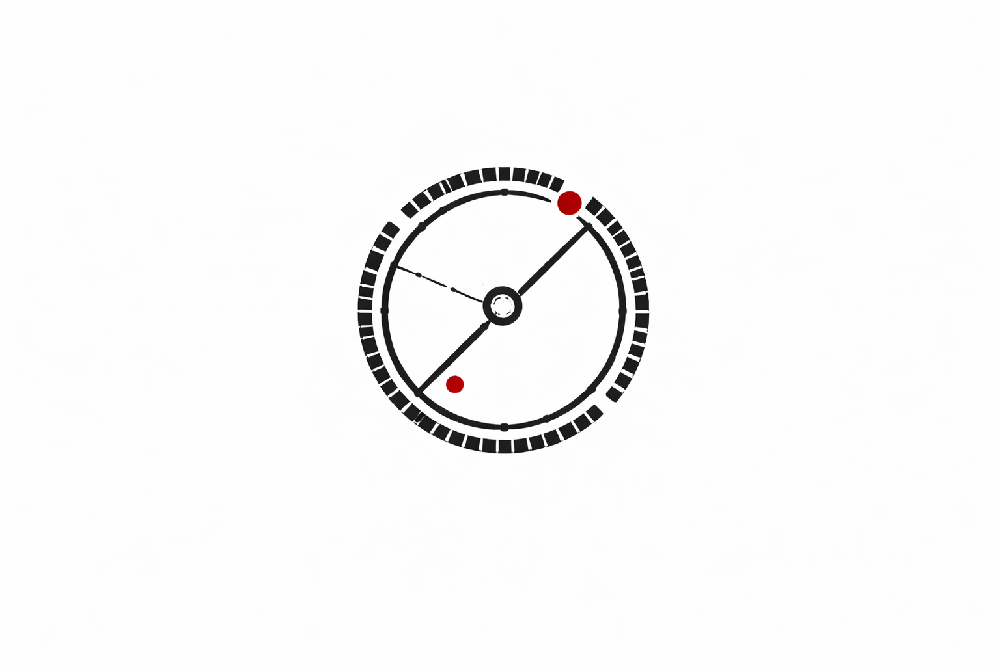
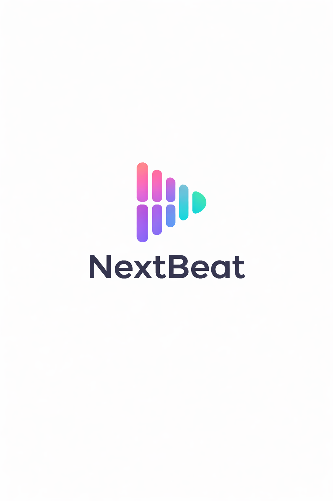

Flux-OS
A "Nothing OS" inspired desktop environment. Minimalist, typography-driven, and philosophically bare metal.
View Live Site →Bright Bench is a human-scale workshop where ideas are sketched, tested, and refined. A one-man operation building honest tools at the intersection of design and engineering.
Flux-OS is a 32-bit, hobbyist operating system written from scratch in C and x86 Assembly. It aims to be a "Nothing OS" inspired desktop environment—minimalist, typography-driven, and philosophically bare metal.
Vision: To create a desktop experience that feels like a digital instrument cluster. No bloat. No clutter. Just raw interaction between user and machine.
Currently in Pre-Alpha, the system boots successfully via GRUB into a protected-mode kernel. It features a custom software rasterizer (GFX) and a philosophy that exposes the Multiboot memory maps and interrupt descriptor tables to the user.
"The void is not empty. It is full of potential."


A "Nothing OS" inspired desktop environment. Minimalist, typography-driven, and philosophically bare metal.
View Live Site →
A social music platform built for moments, not algorithms. A democratic queue system where every guest contributes exactly one song.
View Project →A mapping tool that treats local experience as expertise. It turns fragmented knowledge about local routes into shared, useful safety data.
Visit Live Site →Interfaces that feel calm, intentional, and honest. Avoiding visual noise in favor of thoughtful simplicity, letting typography breathe.
Respecting clean structure and maintainable code. Well-considered simplicity often outperforms unnecessary complexity.
A workshop, not a factory. Every project is cared for deeply, with long hours spent refining small decisions rather than cutting corners.